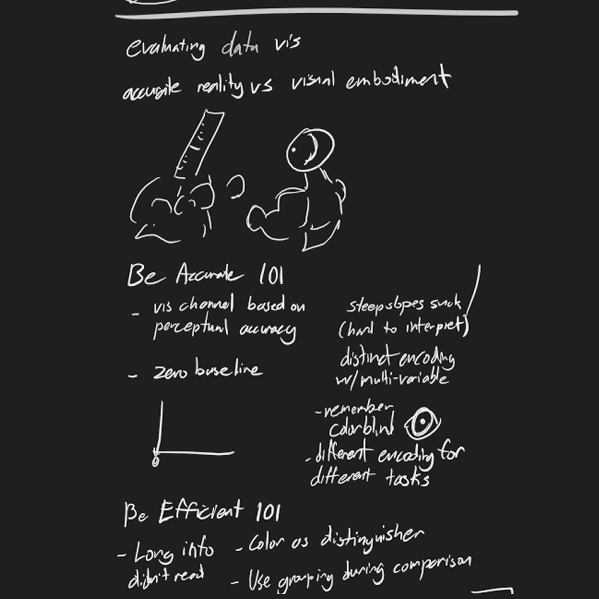
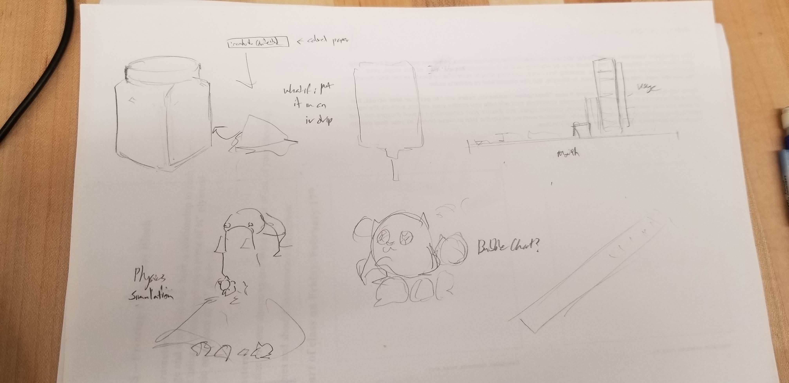
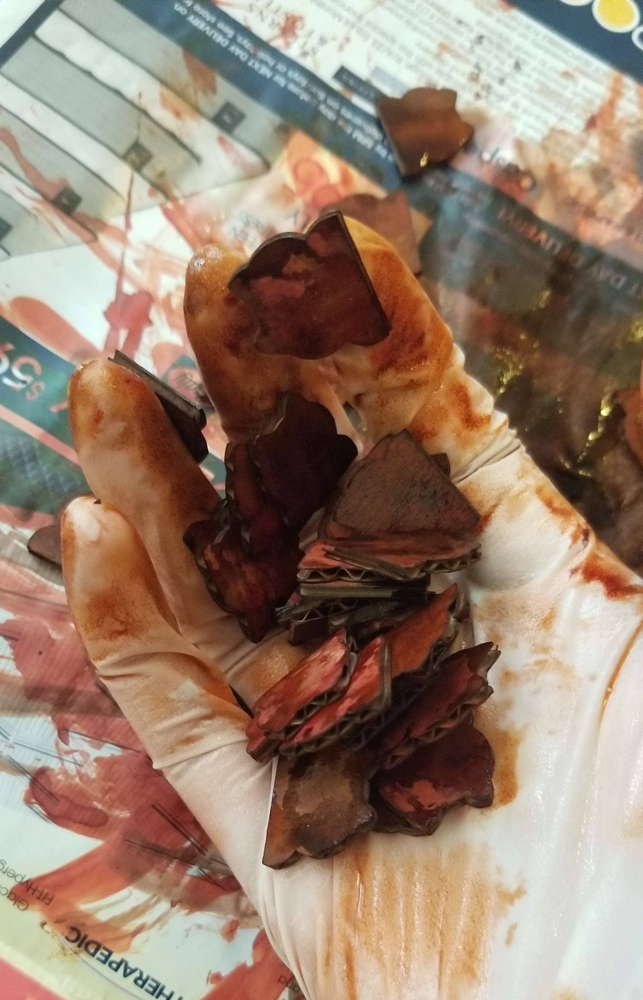

The Grand Naruhodo Count
interaction, design
project overview
In this project, students will create a data visualization (print or
digital) that represents an aspects of their everyday life.
(elaborate further later)
details
tools
Observeable Plot
Acrylic Cubes
Laser Cutter
Cardboard
deliverables
Design Question
Process Blog
Data Collection Protocol
Data Collection
Concept Drawings
Data Visualization
timeline
Fall 2023
what is data?
a brief study into learning how to categorize data in sketchnotes
form
As practice into forms of data visualization, I took my notes over data
in sketchnotes form, focusing on what was most important and emphasizing
facts with illustrations and hand lettering.
Through note taking and in-class study, I developed my understanding of
what data was, how the author's worldview can impact it, the different
levels of data (entities, relationships, and atributes), and how data
can be wielded to empower/harm.
creating a design question?
brainstorming ideas to try and record my weird and wild life
With the introduction of this project, I already had plans of trying to
record something a bit more out of the ordinary. At first, I had
considered two ideas.
-
- "How could I document the amount of time I spend using my legs?"
-
- "How could I explore my habit of data hoarding through open tabs
on my desktop?"
Though these ideas did sound interesting, I felt like their scope was a
bit limited and in tune to my professor's feedback, could be weirder.
And so, I went back to the drawing board, immediately opened up Discord
instead to check on a notification, and there I saw it.
Much of my time has been spent by shitposting on random Discord servers,
specifically with this emote. Several years ago a friend had introduced
me to this emote. :naruhodo: It originated from a Bkub comic from 2017,
to a Russian Telegram sticker pack, to a Twitch emote, to a friend’s
discord server server - all under different names), and I proceeded to
run with this joke until the present day.
“Naruhodo” is a japanese word generally meaning “I see”, “I agree” or “I
understand”, generally used in a more casual environment as it includes
feelings of admiration.
Similar to how it is used in Pop Team Epic, how I use it is almost
completely opposite of what I mean. I will use the emote for any
context, whether I'm agreeing, disagreeing, chastising, waiting, etc. In
addition, there are many variations of the emote made by myself and
others that I use in tandem with the original, with their use sometimes
making even less sense. Because of this, I thought it would be
interesting to track how I use :naruhodo: in order to see what the emote
truly means to me.
the data collection protocol
how will i collect my data?
| date |
time |
platform |
community |
variation |
context |
purpose |
placement |
| ordinal |
ordinal |
nominal/text |
nominal/text |
nominal/text |
nominal/text |
nominal/text |
nominal/text |
The emote is primarily used online on Discord and Twitter so timestamps
and contexts are recorded when I use them. I plan on collecting all of
the data at the end of the day as to not disturb conversation flow in
cause I use the emote multiple times in a conversation. I have used it
in real life on rare occasions, so for those times I will record the use
immediately.
I had brought up the history of the emote during discussion with my
peers and professor, which lead to interest on the history of the emote
even beyond my usage. Tracking the evolution of :naruhodo: across a
longer time frame seemed interesting as I feel like it could also reveal
more about my messaging habits in general. With this, I decided to shift
my original collection protocol to focus on the one community I talk the
most in, over the period of a year, taking random samples from each
month as using all 1,000+ instances would lead to a very bloated visual.
Feedback from Peers
"...At first I found some subjects difficult to place on how they may
be visually displayed, however given further explanation on certain
aspects like "purpose" and "context" as extra details would help with
organizing the data on the other factors. I find some aspects
confusing on the tracking and parameters placed on its usage, but I am
confident these can be clarified with further exploration. I'm
wondering how you would track your usage in the times you do
occasionally use it in real life. It would have to rely on memory
rather than the data history tracked on your usage online, or would
recording after immediate action be a large interjection.
"yes, seems viable. might need clearer distinctions/parameters for
when an interjection counts as a naruhodo usage and when it doesn't.
also unsure about the placement of context and whether it's relevant"
From peer feedback, I began looking at the scope of my project again.
Some of the data I recorded felt a bit irrelevant to the final plot,
like platform and community so I ended up removing them from the
protocol so that I could place higher priority on collecting other
points of data.
| date |
time |
variation |
pre/post messages |
purpose |
placement |
| ordinal |
ordinal |
nominal/text |
??? image/text? |
nominal/text |
nominal/text |
My data collection process would be mostly the same, although I would be
choosing 25 messages at random from previous months, spanning from
August 2022 to August 2023 to take a full year of :naruhodo: use into
perspective.
what is data visualization?
learning more on good practices for visuals

Going through the mini-lecture, I started to consider what kind of
visualization I wanted to do. Considering the amount of data points I
had, it would probably be best to use color as my indicator between
different types of data, since the scale of my visualization would lead
to images being nigh unidentifiable. Again, with so many points, I
decided that a dot plot would be the best way to show my data.
data collection
welcome to hell, enjoy your stay
I initially started with manually hand typing pre/post messages, but I
realized after the first month of messages...
This would take years for me to complete.
Then I started
taking screenshots instead.
I realized this would also take
years
And also heavily bloat my visualization.
Well damn, what now?
I ended up finding an extension called Discrubber that allowed me to
search my use of :naruhodo: spanning back to 2021, and download all of
the message timestamps and contents. Minor editing to the data had to be
done to convert it to my timezone. (and had to consider daylights
savings time)
I wanted to include some information on my visualization about how often
messages were chained together. What is a chain you might ask?...
- aChain
- - Within the same conversation
- - No more than 10 min between messages
- bChain
- - ~3 min between messages
- Does not account for...
- - Stickers
- - Animated Emotes
- - Variations with 1 appearance
If I had the knowledge, I might have been able to automate the process,
but instead I ended up manually reviewing all 1.2k messages. (took a
very LONG time, several hours). Part of me thought that I might be
pushing the scope of my project, but the other part of me was already in
the deep end. There was no backing down now, I would process every
message.
Message Purpose Classification
what is this even about???
Next was determining how to classify message purpose. Since this
information would be purely subjective, I would also have to spend
several hours manually processing data, so I worked on finding ways to
make the process more efficient. I started by going through every
message in July 2023 and describing every message however I saw fit. I
then reviewed the descriptions to try and find common themes to
categorize messages like “bullying” and “deflecting”. I started to
reclassify, but I realized that the words were still too long and I
still had a few too many classes. And that’s when it dawned on me.
It’s time for a fucking alignment chart baby.
Through careful introspection the :naruhodo: alignment chart was created
to define my messages on a Malice x Activity scale.Each spot on the
chart had their rating like Active Benevolence that could be shortened
to the first letters (AB) for faster processing. The phrase word, “Heh,
Nice” helped define the key theme of the spot, while the sample message
and keywords helped fill in the spots that the phrase might have missed.
And with the creation of the :naruhodo: chart, I delved back into the
Discord depths and began logging in data once more. My new data
collection protocol proved to be very effective and I ended up finishing
all of the messages in about 5 hours.
visualization play
experimenting with various programs
Over the weekend, I played around with Rawgraphs and Observable to
create some data visualizations. What I realized was that something
about my data was off, both sites couldn’t read my entries correctly if
I wanted to use specific visualizations.
Also, Observable’s documentation is dogshit and made me want to cry.
It is very funny to see all of those points and it definitely made me
feel validated about recording the full 1032 messages, finding that
interesting data about myself was already emerging. I would spend a few
more days working with Observable and while I found that the information
that they revealed was interesting, I thought it would be confusing for
people not in the know.
visualization iteration
it's time to draft
At this point, I was determined to find a way to include the full 1000+
messages in my final visualization. This would be a tough task as many
of the observable plots I had made ended up extremely cluttered, with no
way of appreciating the full magnitude of 1000+ points. I had different
ideas like basic bar graphs and bubble charts, but the two that stood
out to me the most were

- A physical visualization that had each message printed on small
strips of colored paper contained inside a large jar
- A digital visualization that spewed out a shit ton of :naruhodo: as
a physics simulation
Although my original intent was to create an interactive digital
experience to view my message contents, something about a physical
manifestation of my messages enthused me greatly. I felt that the mass
of 1000 messages can’t really be felt in a 2D visual experience as it is
all contained with a screen. Being able to physically interact with each
message would help show my absolute obsession and overuse of :naruhodo:.
I also felt as if the physics simulation was a bit of a surface level
interpretation of my overuse of the emote, so with this in mind, I
pivoted and started developing the physical visualization
visualization development
honing in on an idea
In discussion with my peers, it was agreed upon that the physical
visualization was a more compelling idea. It was suggested to separate
the messages out into different containers in order to show the
magnitude of each alignment. Through this, I had decided on using
acrylic cubes, so that they could form a grid and take the shape of the
alignment chart itself. The idea was to print and attach the alignment
chart to the back of each cube so that the information about each
alignment could be included on the physical visualization so that when
the cubes are all set together, it would form the alignment chart. To
help tie the visualization back to :naruhodo:, I changed the strips of
paper to laser cut cardboard :naruhodo: silhouettes. At this point, I
had thought that the repeated alignment classification of color and
location was unnecessary, so had decided at the time to leave the
cardboard neutral colored.
After another round of critique, I had run by the idea of my physical
visualization to my professor for feedback, and was asked to try and
encode more data into the visualization with color. The problem was that
most of the other data I had was either fairly linear and boring to
visualize or overwhelmingly skewed in one direction that the
visualization would not be able to represent due to physical
constraints. At the same time, I was questioning if users of the
visualization would be able to interact with the interior pieces, or
should I keep the tokens contained within the cubes. This brought on the
idea of having the visualization serve as not only a visualization of my
messaging personality, but also an interactive experience reproducing my
time categorizing all of the messages with the alignment chart.
Each token would once again be assigned a color according to their
alignment, and I would ask users of the visualization to sort the data
out themselves in order to discover the data. Even without the tokens
sorted through, my hope is that the weight of the 1000+ messages is felt
through a giant pile of :naruhodo: tokens, and that the uneven
distribution of colors would be noticeable in the pile.
The final iteration of the visualization before the creation process
would involve:
- Data + aesthetic mappings:
- - Colors + position in grid to show alignment of message
- - One message = one physical token
- Geometric Objects:
- - One token represents a naruhodo
- - Acrylic cubes are the squares of the alignment chart
- Scales:
- - X - Activity
- - Y - Malice
Final Production
it's time
And so, with everything ready, I started to produce the final
visualization.
And it immediately started awfully. My cubes got lost in transit and I
had to rush to order more. Oh well.
I went ahead and took the time to run material and size tests. I had the
choice between 1/8th in. plywood or 1/16 in. cardboard, and while the
plywood had a more premium feel, the cardboard was a much more
economical and environmentally friendly option. I also tested sizes
ranging from 1/4 in., 1/2 in., and ¾ in. widths, ultimately settling on
3/4ths by doing some volume calculations and accounting for the random
jumbling of tokens to take up extra space.
Doing some calculations, with one token taking roughly 15 seconds, it
would take 4.3 hours to cut all the tokens.
4.3 hours
Yeah, no - We’re going to optimize the crap of this. I
solved some issues with lines doubling through printing with InkScape,
and manipulated some of my strokes to help with efficiency. I ended up
with an estimate of about an hour which I was pretty fine with. With
everything ready, I hit start…
It only took 30 minutes.
My estimate was extremely off. It worked out in the end so I guess it was a win?
Anyways, I went ahead and sorted all of my tokens into their respective
categories so that they were ready to be dyed, making sure to inhale a
dangerous amount of fumes during the process.
time to dye
Next came the dyeing process. I thought it would be pretty easy - mix
some food colors with water, let the cardboard absorb the dye, bing bang
boom done.
It took me 2 hours. Completely the opposite of what happened with cutting.
üíÄ
I had to spend a lot of time remixing colors since my mixes ended up
being either too strong or too weak, but eventually I got every piece
dyed. However, some sets ended up being too close in color so I had to
redye them the next day.

At last, after several hours, I was done.
At the same time, I was working on the alignment chart graphics for the
cubes. For the most part, it would be the same information from the
original alignment chart but in the style of the discord client.
I also added the counts for each alignment chart value, just so that
information is easily viewable since there aren't hover options in real
life like there are on the Observable interactive graphs.
These would be put inside the cubes so that they could be displayed out
the back. The original plan was to have a large :naruhodo: displayed on
the front side, since I didn’t want to obscure any information, but
after talking with my professor, I decided to just repeat the
information and shift it slightly higher so that it could be mostly
viewed over the piles of :naruhodo:.
I initially wanted to include a sample message on the backs of the cubes
so that people with no knowledge of my messaging habits could discern
what my alignment chart meant, but there was no good way for me to
incorporate it into the cube without it getting hard to handle. Instead,
I compromised by creating a separate reference sheet as a complementary
piece to the main visualization.
postmortem
my hands hurt
Probably could have had a better idea of what i wanted to do from the
beginning instead of shifting so much to save time Chains were
interesting but ended up not being implemented in the final, maybe
spending the time to physically chain them together in a V2 that’s based
more on my use over time?
1. Perspectives of other users is missing, would be interesting to see
how much my interpretation differs from the average reaction to the
message
2. All of the data collected out of context could definitely be used to
portray me in a very VERY bad light, as shown by the sample messages.
A lot of the data I had collected manually, such as chains, message
contents, and message placement ended up not being used in my final
visualization. While that content was interesting to track and learn
about, I wish I had planned out my protocol better earlier so that I
didn't end up spending time manually recording so much data.